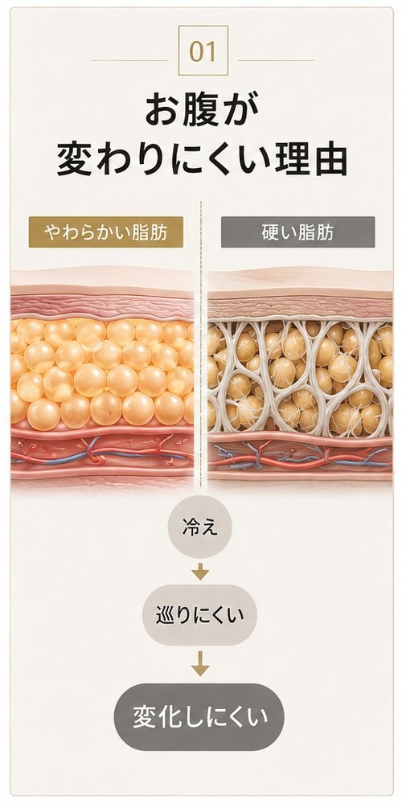
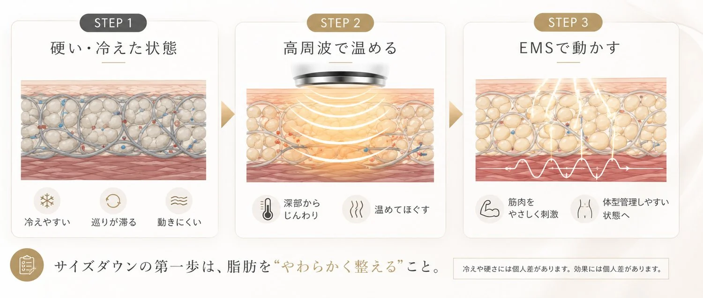
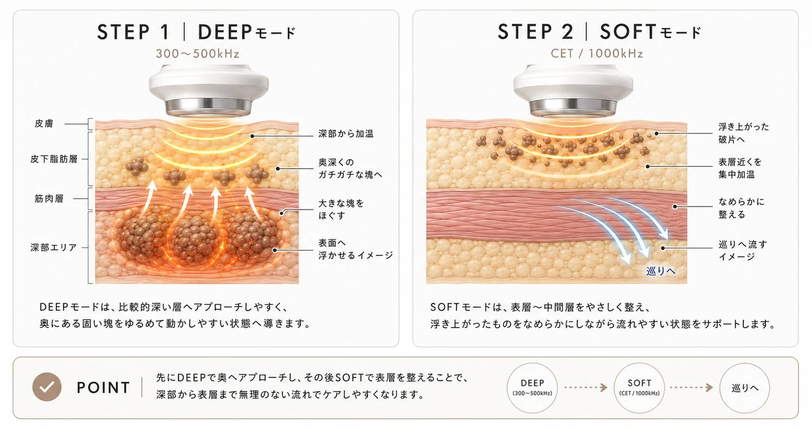
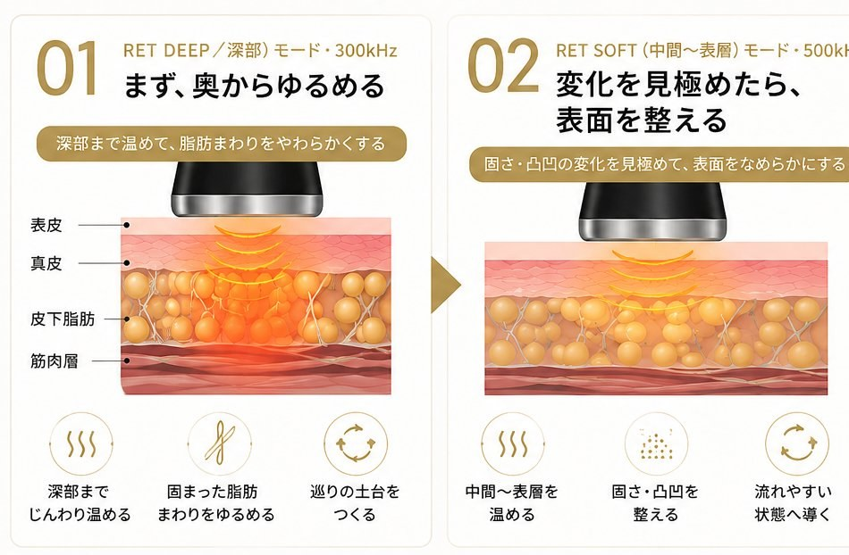

高周波は、体の内側から温める。
高周波（RF＝ラジオ波）とは、1秒間に数十万回以上振動する電気の波。この振動が体の組織に伝わると、分子同士が摩擦を起こして熱が生まれます。カイロやお風呂のように外から温めるのではなく、体の内側から温まるのが、最大の特長です。
熱は、電気抵抗の高い組織ほど生まれやすい性質があります。なかでも脂肪層は抵抗が高く、もっとも熱を持ちやすい層。だからこそ高周波は、お腹まわりなどの体型管理のアプローチに向いています。

組織別の電気抵抗と、熱の生まれやすさ。脂肪層がもっとも熱を持ちやすい。
冷えて固まった体は、
動かしにくい。
お腹や腰を触ると、
ひんやり硬い——。
それは脂肪そのものが硬いのではなく、冷えやめぐりの滞りで、脂肪のまわりの組織が固まっている状態といわれています。お風呂や手のひらの熱では奥まで届きにくく、かといって強く揉むのは体の負担になります。だから、まず温めてゆるめることが大切です。

だから、まず“やわらかく整える”ことから。
高周波で深部から温めてゆるめ、
ゆるんでからHYPER EMSで動かすので、
効率よくアプローチできます。


※ 体型管理・コンディショニングを目的とした施術です。医療行為ではなく、感じ方には個人差があります。
温めて、ゆるめて、整える。
VISUAL LABOの高周波施術は、お腹の状態に合わせてモードを切り替え、最後は手技で仕上げる。3つのステップで進めます。順番に、意味があります。

※ 図は01・02（機械のモード切り替え）です。03の手技は施術者が行います。効果・感じ方には個人差があります。
「奥をゆるめて、表面を整えて、手技で整える」——この順番だからこそ、
自己流ケアでは届かないお腹の奥まで、すっきり整えていけます。
ただ機械をあてるだけでは、ありません。
スタッフがお腹に触れ、固さや凹凸の変化を指先で確かめながら、切り替えのタイミングを見極める。
機械のパワーと、人の手の感覚。ふたつをあわせるのが、VISUAL LABOの施術です。
※ 体型管理を目的とした施術であり、医療行為ではありません。感じ方・変化には個人差があります。
よくある、ご質問。
高周波（RF）とは何ですか？
高周波は熱くないですか？
インディバとの違いは何ですか？
どのくらいの頻度で受けるのがおすすめですか？
※ 安全のため、ペースメーカー等の体内電子機器をご使用の方・施術部位に金属インプラントがある方などは施術をお受けいただけません。持病や体調に不安のある方は、事前にご相談ください。詳しくは安全にご利用いただくためにをご確認ください。